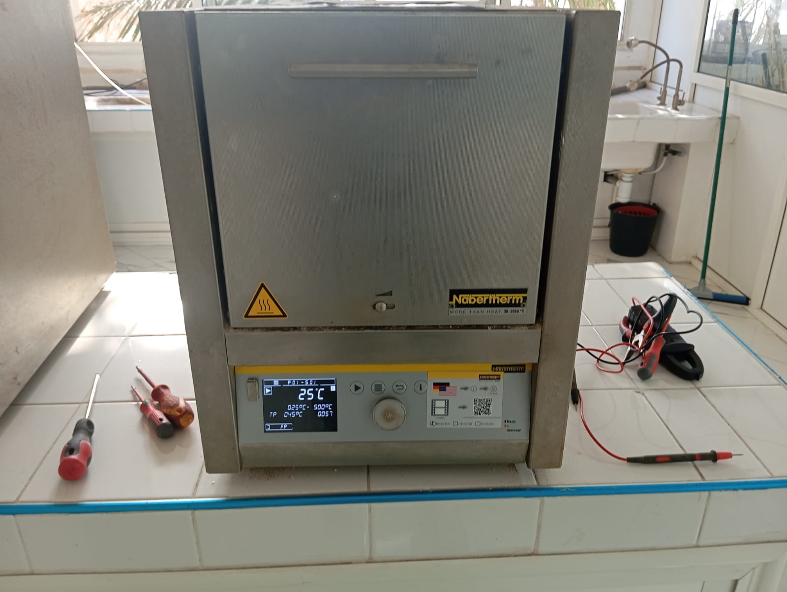

.jpg)
.jpg)
Fonction : Mesure l'absorption ou la transmission de la lumière ultraviolette ou visible par un échantillon. Applications:Utilisé pour l'analyse quantitative de substances qui absorbent la lumière UV ou visible, comme les acides nucléiques, les protéines et certains produits chimiques. Avantages:Sensibilité élevée, large éventail d'applications et fonctionnement relativement simple. Limites:Limité aux échantillons qui absorbent dans la gamme UV/visible.
Les composants opto-électroniques sont conçus pour une gamme de longueurs d'onde. Ils sont souvent monochromatiques. Dans le domaine des télécommunications, les composants utilisés comme relais travaillent dans le proche infra-rouge. Il est toutefois possible de parler d'opto-électronique pour des composants fonctionnant dans le domaine Térahertz2.


L’article R5211-5 du Code la santé publique définit la maintenance comme « l’ensemble des activités destinées à maintenir ou à rétablir un dispositif médical dans un état ou dans des conditions données de sûreté de fonctionnement pour accomplir une fonction requise ».

La métrologie, science des mesures, façonne notre quotidien sans que nous en ayons toujours conscience. Des balances de cuisine aux instruments médicaux sophistiqués, en passant par les compteurs d’énergie.


La technologie de maintenance peut être définie comme l’ensemble des outils, techniques et méthodologies innovantes utilisés pour optimiser les processus de maintenance industrielle. Elle englobe l’utilisation de l’Internet des Objets (IoT), de l’Intelligence Artificielle (IA), du Big Data et de la réalité augmentée pour améliorer la fiabilité, l’efficacité et la sécurité des équipements.

.jpg)
Les énergies renouvelables (EnR) sont alimentées par des sources naturelles inépuisables. Contrairement aux énergies fossiles, elles n’engendrent peu ou pas de déchets et d’émissions polluantes. Elles permettent de produire de l’électricité, de la chaleur, du froid, du biogaz et du carburant.
.jpg)
.jpg)
.jpg)
NOVAIR propose des générateurs d'oxygène adaptés à tous les types d'applications industrielles et à toutes les exigences en matière de débit. Avec la plus grande expertise pour la production d'oxygène sur site, nous répondons aux besoins de toutes les applications grâce à un choix de 4 technologies : générateurs d’oxygène PSA, générateurs d’oxygène PSA modulaires, générateurs d’oxygène DS-PSA et solutions V-PSA.